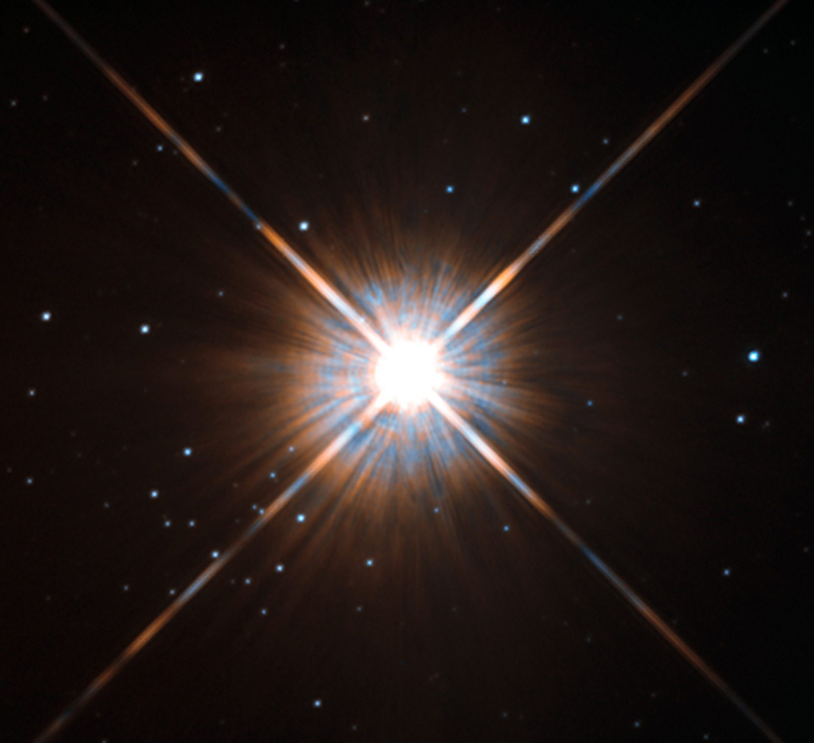
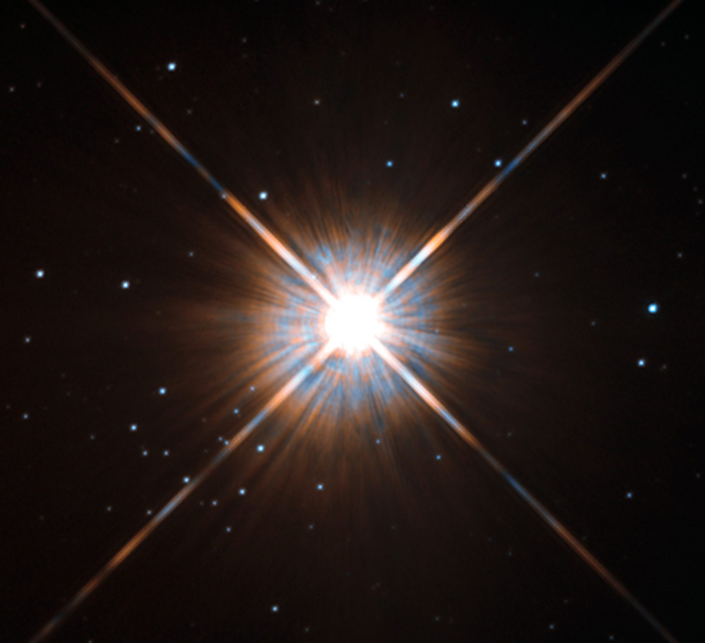

Neutron Star: illustrations of Neutron star

A new study using Chandra data of GW170817 indicates that the event that produced gravitational waves likely created the lowest mass black hole known. The first artist's illustration (left) shows a key part of the process that created this new black hole, as the two neutron stars spin around each other while merging. (The purple material depicts debris from the merger.) The second artist's illustration (right) shows the black hole that resulted from the merger, along with a disk of infalling matter and a jet of high-energy particles. A neutron star is the collapsed core of a massive supergiant star, which had a total mass of between 10 and 25 solar masses, possibly more if the star was especially metal-rich.[1] Except for black holes, and some hypothetical objects (e.g. white holes, quark stars, and strange stars), neutron stars are the smallest and densest currently known class of stellar objects.[2] Neutron stars have a radius on the order of 10 kilometres (6 mi) and a mass of about 1.4 solar masses.[3] They result from the supernova explosion of a massive star, combined with gravitational collapse, that compresses the core past white dwarf star density to that of atomic nuclei.
Proxima Centauri: the closest star to the Sun, at a distance of 4.2 ly (1.3 pc), is a red dwarf
A red dwarf is the smallest and coolest kind of star on the main sequence. Red dwarfs are by far the most common type of star in the Milky Way, at least in the neighborhood of the Sun, but because of their low luminosity, individual red dwarfs cannot be easily observed. From Earth, not one star that fits the stricter definitions of a red dwarf is visible to the naked eye.[1] Proxima Centauri, the nearest star to the Sun, is a red dwarf, as are fifty of the sixty nearest stars. According to some estimates, red dwarfs make up three-quarters of the stars in the Milky Way.[2] The coolest red dwarfs near the Sun have a surface temperature of ~2,000 K and the smallest have radii of ~9% that of the Sun, with masses about ~7.5% that of the Sun. These red dwarfs have spectral classes of L0 to L2. There is some overlap with the properties of brown dwarfs, since the most massive brown dwarfs at lower metallicity can be as hot as 3,600 K and have late M spectral types.
Sirius: image of Sirius A taken by the Hubble Space Telescope.
Sirius is the brightest star in the night sky. Its name is derived from the Greek word Σείριος (Seirios, lit. 'glowing' or 'scorching'). The star is designated α Canis Majoris, Latinized to Alpha Canis Majoris, and abbreviated Alpha CMa or α CMa. With a visual apparent magnitude of −1.46, Sirius is almost twice as bright as Canopus, the next brightest star. Sirius is a binary star consisting of a main-sequence star of spectral type A0 or A1, termed Sirius A, and a faint white dwarf companion of spectral type DA2, termed Sirius B. The distance between the two varies between 8.2 and 31.5 astronomical units as they orbit every 50 years.Sirius appears bright because of its intrinsic luminosity and its proximity to the Solar System. At a distance of 2.64 parsecs (8.6 ly), the Sirius system is one of Earth's nearest neighbours. Sirius is gradually moving closer to the Solar System, so it is expected to slightly increase in brightness over the next 60,000 years. After that time, its distance will begin to increase, and it will become fainter, but it will continue to be the brightest star in the Earth's night sky for approximately the next 210,000 years.
Proxima Centauri: a Chandra satellite x-ray image of the closest star to the Sun: the red dwarf.
Proxima Centauri is a small, low-mass star located 4.2465 light-years (1.3020 pc) away from the Sun in the southern constellation of Centaurus. Its Latin name means the 'nearest [star] of Centaurus'. It was discovered in 1915 by Robert Innes and is the nearest-known star to the Sun. With a quiescent apparent magnitude 11.13, it is too faint to be seen with the unaided eye. Proxima Centauri is a member of the Alpha Centauri star system, being identified as component Alpha Centauri C, and is 2.18° to the southwest of the Alpha Centauri AB pair. It is currently 12,950 AU (0.2 ly) from AB, which it orbits with a period of about 550,000 years. Proxima Centauri is a red dwarf star with a mass about 12.5% of the Sun's mass (M☉), and average density about 33 times that of the Sun. Because of Proxima Centauri's proximity to Earth, its angular diameter can be measured directly. Its actual diameter is about one-seventh (14%) the diameter of the Sun. Although it has a very low average luminosity, Proxima Centauri is a flare star that randomly undergoes dramatic increases in brightness because of magnetic activity.
Sirius B: a Dog Star
The visible star is now sometimes known as Sirius A. Since 1894, some apparent orbital irregularities in the Sirius system have been observed, suggesting a third very small companion star, but this has never been confirmed. The best fit to the data indicates a six-year orbit around Sirius A and a mass of 0.06 M☉. This star would be five to ten magnitudes fainter than the white dwarf Sirius B, which would make it difficult to observe. Observations published in 2008 were unable to detect either a third star or a planet. An apparent "third star" observed in the 1920s is now believed to be a background object. In 1915, Walter Sydney Adams, using a 60-inch (1.5 m) reflector at Mount Wilson Observatory, observed the spectrum of Sirius B and determined that it was a faint whitish star. This led astronomers to conclude that it was a white dwarf—the second to be discovered. The diameter of Sirius A was first measured by Robert Hanbury Brown and Richard Q. Twiss in 1959 at Jodrell Bank using their stellar intensity interferometer. In 2005, using the Hubble Space Telescope, astronomers determined that Sirius B has nearly the diameter of the Earth, 12,000 kilometres (7,500 mi), with a mass 102% of the Sun's.
Supernova: the expanding ring-shaped remnant of SN 1987A and its interaction with its surroundings, seen in X-ray and visible light.
SN 1987A was a type II supernova in the Large Magellanic Cloud, a dwarf satellite galaxy of the Milky Way. It occurred approximately 51.4 kiloparsecs (168,000 light-years) from Earth and was the closest observed supernova since Kepler's Supernova. 1987A's light reached Earth on February 23, 1987, and as the earliest supernova discovered that year, was labeled "1987A". Its brightness peaked in May, with an apparent magnitude of about 3. It was the first supernova that modern astronomers were able to study in great detail, and its observations have provided much insight into core-collapse supernovae. SN 1987A provided the first opportunity to confirm by direct observation the radioactive source of the energy for visible light emissions, by detecting predicted gamma-ray line radiation from two of its abundant radioactive nuclei. This proved the radioactive nature of the long-duration post-explosion glow of supernovae. For over thirty years, the expected collapsed neutron star could not be found, but in 2019 it was announced found using the ALMA telescope and in 2021 using the Chandra and NuSTAR X-ray telescopes.
DEFINITION
A star is any massive self-luminous celestial body of gas that shines by radiation derived from its internal energy sources. Of the tens of billions of trillions of stars in the observable universe, only a very small percentage are visible to the naked eye. Many stars occur in pairs, multiple systems, or star clusters. The members of such stellar groups are physically related through common origin and are bound by mutual gravitational attraction. Somewhat related to star clusters are stellar associations, which consist of loose groups of physically similar stars that have insufficient mass as a group to remain together as an organization. Almost every star you see in the night sky is much larger than the sun. For the majority of their lives, the biggest stars are tinted blue. This is because they emit so much energy that the radiation that comes out is actually all the way over in the ultraviolet, with a little bit of the emission coming out in the blue end of our visible range.
RED GIANT
When star like our Sun reaches the end of its life, it enters one last phase, ballooning up to many times its original size. Astronomers call these objects red giant star, and you will want to learn more about them, since this is the future fate for the Sun. Do not panic, w have got another 7 billion years or so before the Sun becomes a red giant star. As you probably know, stars shine because they are converting hydrogen into helium in their cores through a process called nuclear fusion. Our own Sun has been performing fusion at its core for 4.5 billion years, and will continue to do so for another 7 billions years, at least. The helium byproduct from this fusion reaction slowly builds up in the core of a star, and they have no way to get rid of it. Eventually, billions of year down the road, a star uses up the last of its hydrogen fuel. A red giant will expand outward many times its original size.
WHITE DWARF
Main-sequence stars, including the sun, form from clouds of dust and gas drawn together by gravity. How the stars evolve through their lifetime depends on their mass. The most massive stars, with eight times the mass of the sun or more, will never become white dwarfs. Instead, at the end of their lives, white dwarfs will explode in a violent supernova, leaving behind a neutron star or black hole. Smaller stars, however, will take a slightly more sedate path. Low- to medium-mass stars, such as the sun, will eventually swell up into red giants. After that, the stars shed their outer layers into a ring known as a planetary nebula (early observers thought the nebulas resembled planets such as Neptune and Uranus. The core that is left behind will be a white dwarf, a husk of a star in which no hydrogen fusion occurs. Smaller stars, such as red dwarfs, don't make it to the red giant state. They simply burn through all of their hydrogen, ending the process as a dim white dwarf.
RED DWARF
Red dwarf stars make up the largest population of stars in the galaxy, but they hide in the shadows, too dim to be seen with the naked eye from Earth. Their limited radiance helps to extend their lifetimes, which are far greater than that of the sun. Scientists think that 20 out of the 30 stars near Earth are red dwarfs. The closest star to the sun, Proxima Centauri, is a red dwarf. The term "red dwarf" does not refer to a single kind of star. It is frequently applied to the coolest objects, including K and M dwarfs — which are true stars — and brown dwarfs, often referred to as "failed stars" because they do not sustain hydrogen fusion in their cores. Red dwarfs form like other main-sequence stars. First, a cloud of dust and gas is drawn together by gravity and begins rotating. The material then clumps at the center, and when it reaches the critical temperature, fusion begins.